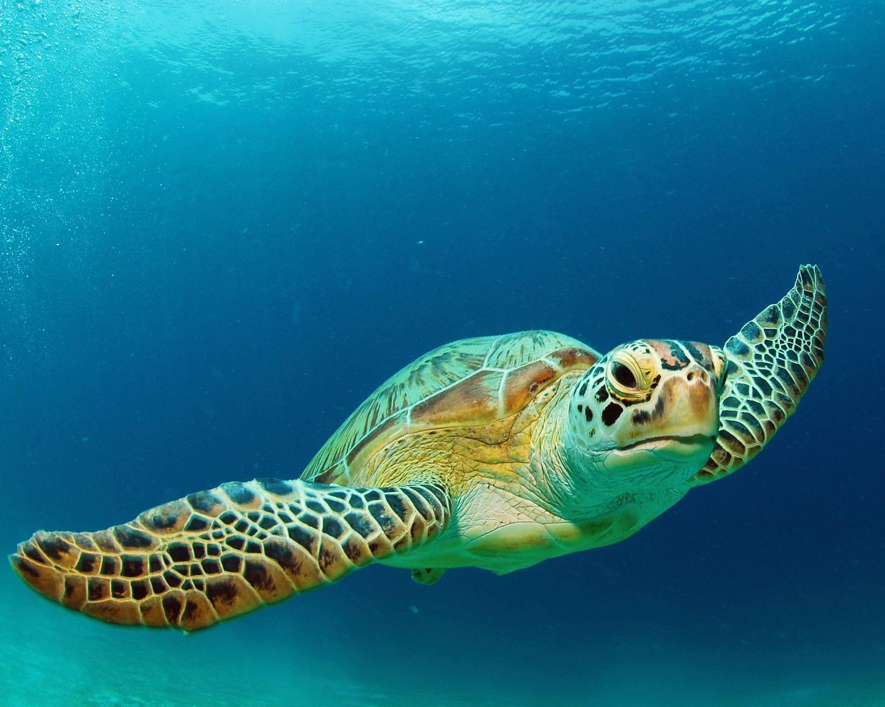

About Hikkaduwa Turtle Hatchery
The Hikkaduwa Turtle Hatchery is a conservation project that aims to protect and conserve sea turtles in Sri Lanka. The hatchery provides a safe and protected environment for sea turtles to lay their eggs, and once hatched, the baby turtles are released back into the ocean.

Visitors to the hatchery can learn about the different species of sea turtles found in Sri Lanka, and also have the opportunity to participate in the release of baby turtles into the ocean. The hatchery also conducts research and conservation programs to protect sea turtles and their habitats.
Things to do at Hikkaduwa Turtle Hatchery
- Observe sea turtles and learn about their life cycle
- Participate in the release of baby turtles into the ocean
- Visit the hatchery's museum and learn about the conservation efforts
- Donate to the hatchery's conservation programs to support their efforts
